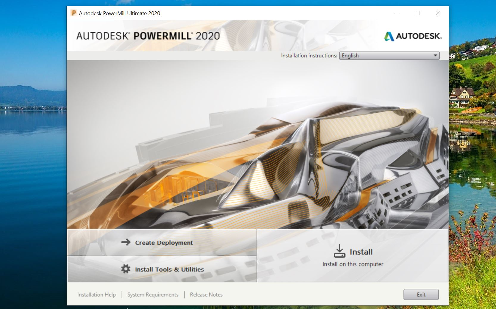

Kinh nghiệm cài đặt phần mềm CAD CAM(update 24/12/2020)- Thuat Thai
2.File được write dưới dạng *.iso hoặc *.img. Đối với dạng file này các bạn cần 1 phần mềm tạo ổ đĩa ảo như Ulstraiso để Mount vào ổ đĩa. Sau đó vào ổ đĩa ảo giống như vào 1 đĩa DVD vật lý bình thường và tiến hành cài đặt. Hình dưới là giao diện cài đặt của AutoDesk PowerMill-một phần mềm CAM khá nổi tiếng. Cơ bản ở bước này là chúng ta chỉ việc click vào file setup, sau đó thường là bấm install rồi sau đó click vào nút " ACCEPT" để đồng ý với các điều kiện của nó. Nếu hiểu về các tùy chọn chuyên sâu các bạn hãy chọn "custom" để tùy chĩnh, còn nếu chưa tìm hiểu kỹ, các bạn nên để tùy chọn là "typical " hoặc "classic" để cài đặt bình thường tránh phát sinh lỗi. Tùy vào cấu hình máy của bạn mà tốc độ cài đặt sẽ nhanh hoặc chậm.
Bước 4 : Mở khóa phần mềm.
Đây là bước cuối cùng và vô cùng quan trọng -quyết định thành bại trong trận ra quân cài phần mềm của anh em. Mỗi phần mềm có cách "chơi " riêng, Anh em nên đọc kỹ hướng dẫn được chia sẽ để làm theo thật chuẩn xác.Mặc dù vậy ở đây mình chia sẽ một vài điểm chung:
1. Dạng mở khóa bằng Serial >Nhớ chạy file patch bằng quyền Admin.
2. Dạng mở khóa bằng USB ảo > đưa máy tính về chế độ TEST MODE.
3. Dạng mở khóa bằng LMTOOL > Lưu thư mục chứa các file lisence vào ổ hệ thống và nhớ không được xóa.
4. Cập nhật Windown trước khi cài đặt, sau khi cài rồi không nên cập nhật nữa.
Trên đây là một số chia sẽ ngắn của mình. Nói chung để cài đặt thành công anh em nên tìm hiểu kỹ lưỡng, làm từng bước một, tránh vội vàng, nếu có bạn bè người thân rành công nghệ nên nhờ hỗ trợ từ họ. Chúc anh em cài đặt thành công. Hẹn anh em ở các bài chia sẽ khác.
QUAY VỀ TRANG TRƯỚC<<<<